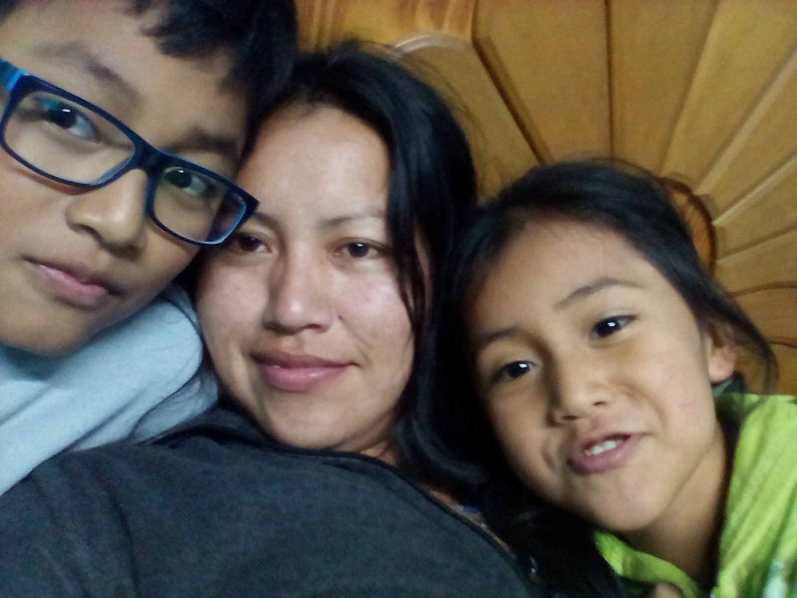
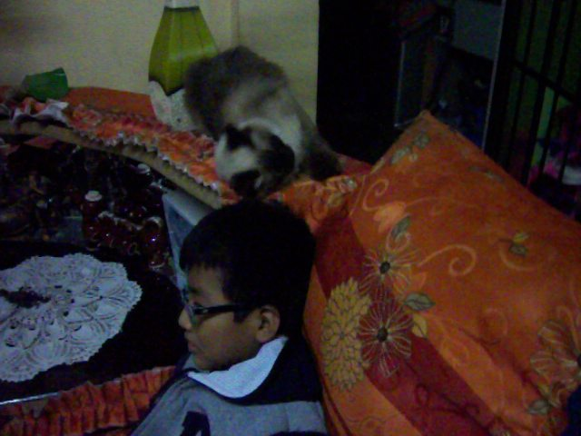

🌸✨ ¡Feliz Día Mamá! ✨🌸

ola mami como tas, hoy vengo a decirte un feliz compleaños, ya pasaron 2 años tan rapido aun recuerdo cuando te hize la ultima carta, siento que fue hace unos 3 meses
hoy te doy mi regalito, una pagina web, la verdad no pense que acabaria, taba sufriendo, pero me salio waaaa, ahora voy a mostrarte algunas fotitos que nos tomamos juntos wiiwwi

En esta foto recuerdo que me habias dicho que querias que nos tomemos unas fotos pero como
tu hijo era bien especial hacia esas caras, pero la verdad era que no sabia como posar en la camra asi que hacia esas caras

como olvidar cuando teniamos a bombi y a machin, esos dias recuerdo que habias roto la parte de atras de la casa
y ahi vivian bombi y machin, los teniamos encerrados con una madera porque hacian mucho desastres o tiraban pelo pero cuando tu te ibas a mercado los sacaba
porque me daban penita

Esas veces que ibamos al pachacutec para limpiar la casa, recuerdo que siempre cuando entrabamos a la casa estaba lleno de arañas y me daba cositas pasar
o cuando me decias que tenia que juntar agua el tanque de agua esta abajo y tenia que esperar que llene un balde de pintura y luego llenarlo en una tina grande verde,siempre
me quejaba porque me dolian las piernas, pero si no lo haciamos nosotros nadie lo iba hacer ni para ezperansarnos de ese onaso

Una foto de una me, una pequeña me, creo que fue uno de esos dias de navidad cuando nos regalaste una tablet, yo era bien vicioso,
a veces me paraba por las noches para jugar un rato angry birds, otros dias jugaba con la me en la tablet un juego que era para dos o una vez que nunca olvidare
que cuando habia regresado del colegio y me dijiste que habias descarga Minecraft en la tablet y yo me emocione y quize jugarlo de una, y ahora que lo pienso ese juego
ahora cuesta plata pero de todas muchas gracias mami por las cosas que hacias por vernos felices

La chanchita pero joven chanchita, recuerdo como me mordia el pelo y se juagaba con mi cabeza y a mi me gustaba porque era divertido, nose si era porque
mis pelos eran puas o porque olia mal , no sabo, si te fijas bien en la imagen en la parte de atras esta la puerta con la ventana rota, lo habiamos roto porque no habia descongelado
el pollo y tu me lo querias lanzar, y yo por pendejo lo esquivo y rompemos en vidrio, recuerdo como te quedaste con la cara sorprendida porque tenias miedo que se escuche desde abajo o nose
pero yo tenia mas mello porque sabia que te ibas a enojar mas, en esos tiempos era bien pendejo para olvidarme descongelar un pollo que no demora ni 30 segundos,eñeñeñeñe yo
y mi flojera

las veces que me decias vamos a comer al alfredo, yo que me quedafa feliz porque sabia que iba a comer rico y iba a terminar regresando con la pansa llena,
a pesar de no tener la mejor economia siempre tratabas de sacarlos a pasear comprarnos cosas o ropa, en esos tiempo no pensaba en los sacrificios que hacias, recien teniendo esta edad
me doy cuenta de la buena madre que eres, que siempre veias por nosotros, creo que tan solo decir muchas gracias no es suficiente, cada vez que lo decia muchas gracias, gracias mami
era muy repetitivo, pero no habia otra palabra para decirte lo agradecido que estaba contigo, te amo mucho mami

los 3 , siempre fuimos 3 , a pesar de que tuvimos a un padre si es que se le puede decir padre, siempre estuvimos los 3 juntos, pasamos por muchos
problemas pero siempre podimos seguir adelante, las tantas cosas que pasamos, una mentira, la mudanza, la contruccion, problemas, y ahora un viaje, pero a pesar de que
estes lejos mami y no estes con nosotros fisicamente, siempre te amare, yo siempre recordare las enseñaste que me diste cuando estabas conmigo, que a pesar eras dura con nosotros
sabia que lo hacias por nuestro bien, para que nosotros podamos vernos por si mismos cuando estemos grandes, y siempre te lo voy agradecer mami, muchas gracias por ser nuestra madre
te queremos mucho, feliz cumpleañossssss.